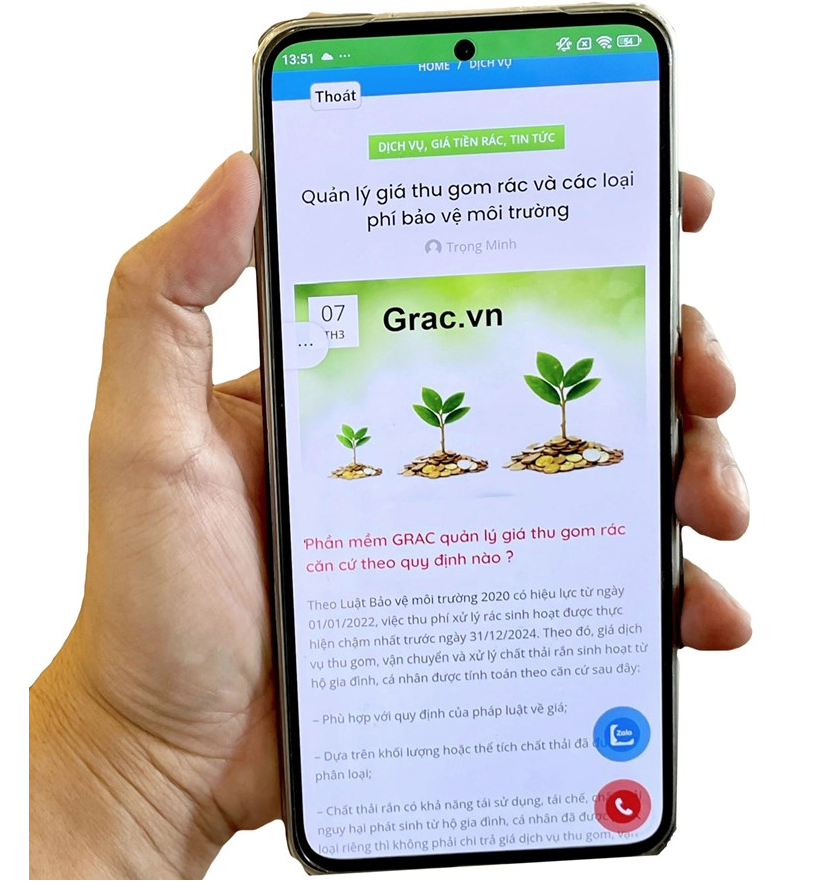
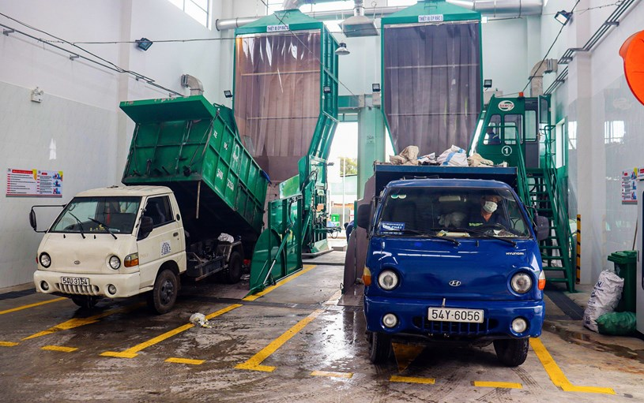
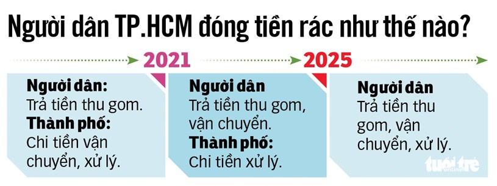
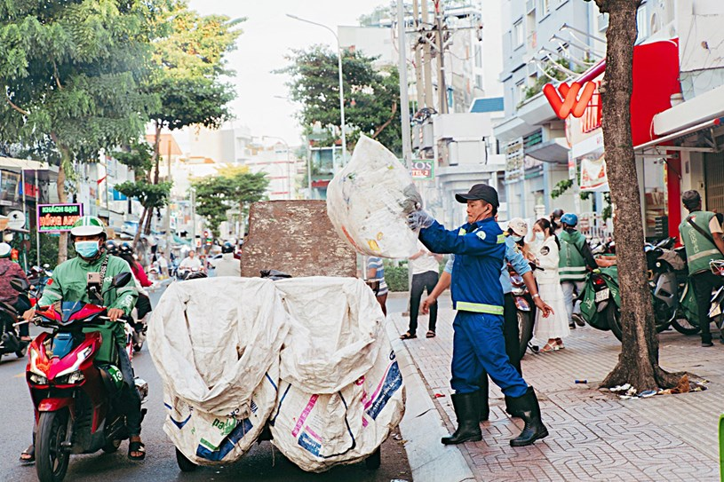
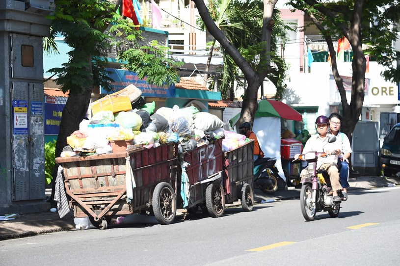
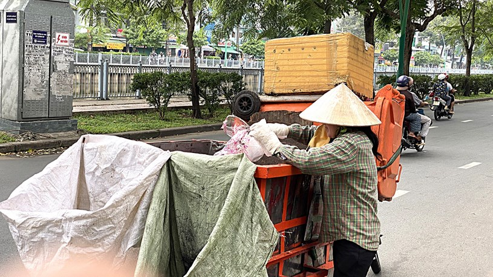

Chuyên nghiệp thu gom rác để nâng hiệu quả, không có thất thoát hay mập mờ
Đơn vị thu gom rác đàng hoàng thì được nhận đúng số tiền họ đã làm, nếu làm không trách nhiệm, có phản ánh của người dân thì phường sẽ nắm được để xử lý. Xe rác dân lập tập kết trên đường Lê Văn Sỹ, quận 3, TP.HCM, chiều 29-6 - Ảnh: TỰ TRUNG
Quận Bình Tân (TP.HCM) vừa có đề án Nâng cao chất lượng dịch vụ thu gom và vận chuyển rác sinh hoạt.
Đây có thể xem là một trong những quận đầu tiên ở TP triển khai thực hiện đề án chuẩn hóa lực lượng thu gom rác dân lập và trực tiếp quản lý công tác thu chi tiền rác… để đưa việc này vào quy củ.
Việc tổ chức lại hệ thống thu gom rác nhằm mục đích nâng cao hiệu quả, đảm bảo mỹ quan đô thị chứ không loại bỏ hệ thống thu gom rác tư nhân, mà trái lại còn hỗ trợ các đơn vị thu gom rác hiện có hiện đại hơn thông qua hợp tác, đầu tư hoặc liên kết.
Trao đổi với Tuổi Trẻ, ông Vũ Chí Kiên, phó chủ tịch UBND quận Bình Tân, nói rõ hơn về đề án này.

Theo đề án mới, từ ngày 1-7, người dân quận Bình Tân sẽ đóng tiền rác qua ứng dụng cho phường - Ảnh: CHÂU TUẤN
Người dân đóng tiền qua app
Ông Vũ Chí Kiên
* Thưa ông, xuất phát từ lý do nào mà quận Bình Tân triển khai đề án Nâng cao chất lượng dịch vụ thu gom và vận chuyển rác sinh hoạt?
- Đặc thù quận Bình Tân không có công ty công ích để thu gom rác sinh hoạt, mà do đơn vị rác dân lập đảm nhận từ lúc tách quận năm 2003 đến nay. Trong quá trình đó cũng dần được chuẩn hóa bước đầu và thành lập các công ty, hợp tác xã.
Còn khâu vận chuyển rác thì hiện quận Bình Tân đang đấu thầu. Theo gói thầu, các đơn vị tham gia sẽ vận chuyển rác từ điểm hẹn của quận đến nơi xử lý tập trung của TP. Quy trình thu gom, vận chuyển, xử lý rác của quận có thể tóm tắt như sau: các đơn vị khi thu gom lấy rác từ nhà dân đến điểm hẹn, điểm trung chuyển và chuyển giao cho xe của đơn vị vận chuyển đưa về nơi xử lý.
Quận hiện nay có 10 phường nhưng dân số hơn 800.000 người, lượng rác thải sinh hoạt khoảng 500 tấn/ngày. Các đơn vị thu gom hình thành từ thời còn chưa tách quận nên phương tiện thu gom thô sơ, chưa đạt chuẩn. Nhiều phường có hơn 20 đơn vị thu gom khác nhau, chất lượng không đồng bộ. Quận thường xuyên nhận phản ánh của người dân về việc thu gom không đúng thời gian quy định.
Ngoài ra việc thu tiền đôi khi cũng không được minh bạch, giá thu gom và vận chuyển đã cố định, tuy nhiên có đơn vị thu nhiều hơn, thu thêm tháng 13, đòi hỗ trợ, bồi dưỡng thêm… khiến nhiều người dân bức xúc, không đồng tình. Nhưng hầu như các đơn vị thu gom từ xưa làm cố định tuyến đó nên người dân không có lựa chọn.
Còn điểm trung chuyển thì phát sinh rất nhiều vấn đề môi trường, người dân sống xung quanh phản ánh nhiều. Đây cũng là vấn đề lịch sử để lại vì trước kia các điểm này xa khu dân cư, ít người ở. Nay đô thị hóa thì người dân về ở thành khu dân cư và bị ảnh hưởng.
Với yêu cầu về điều kiện môi trường, mỹ quan đô thị và chất lượng sống của người dân ngày càng cao, các bất cập trên cần phải khắc phục. Vì vậy lãnh đạo UBND quận đã đưa ra chủ trương cần phải thay đổi về phương thức thực hiện thu gom, vận chuyển rác, xây dựng đề án Nâng cao chất lượng dịch vụ thu gom và vận chuyển rác sinh hoạt.

Trạm trung chuyển rác ở phường Thạnh Xuân (quận 12, TP.HCM) hoạt động theo kiểu ép rác khép kín, giảm mùi hôi và chuyên nghiệp hóa - Ảnh: GIAI THỤY
* Ông có thể chia sẻ chi tiết một số mục tiêu chính của đề án?
- Đề án tập trung vào hai mục tiêu chính là nâng cao chất lượng dịch vụ thu gom rác kịp thời, đúng thời gian quy định, tiết kiệm chi phí. Xóa bỏ các điểm hẹn không đảm bảo chất lượng nhằm nâng cao chất lượng vệ sinh môi trường, mỹ quan đô thị trong khu dân cư.
Thứ hai, quản lý, giám sát chặt chẽ hoạt động thu gom và vận chuyển rác trên địa bàn quận. Theo đó các phường nắm được việc thu, nộp tiền thu gom và vận chuyển rác theo đúng quy định, đảm bảo thanh quyết toán chi phí cho đơn vị vận chuyển theo khối lượng thực tế phát sinh.
Để giải quyết vấn đề thu tiền không minh bạch, quận thay đổi phương thức thu tiền thủ công bằng áp dụng công nghệ thông tin, người dân đóng tiền qua ứng dụng trên điện thoại. Tôi nghĩ người dân sẽ hưởng ứng khi biết mình đóng bao nhiêu tiền, còn thiếu bao nhiêu.
Tiền đóng vào UBND phường và phường sẽ thanh toán lại cho các đơn vị thu gom, không có thất thoát hay mập mờ, không rõ ràng.
Đơn vị thu gom đàng hoàng thì họ được nhận đúng số tiền họ đã làm. Nếu đơn vị thu gom làm không trách nhiệm, có phản ánh của người dân thì phường sẽ nắm được để xử lý.
Về chuẩn hóa, quận muốn lực lượng thu gom rác phải chuẩn hóa về con người, phương tiện, khả năng quản lý. Đề án có đưa ra những tiêu chí yêu cầu và nếu đáp ứng những yêu cầu đó thì mới được tham gia.
Quận định hình sẽ không thu gom lẻ tẻ như hiện nay, một đơn vị tham gia sẽ đảm nhận cho một phường, không chỉ làm vài tuyến đường lắt nhắt. Về nguyên tắc kinh tế, quy mô làm càng lớn, hiệu quả càng cao.
Tôi ví dụ cũng 2 con người đó có thể thu gom 5 tuyến đường nhưng hiện nay chỉ làm ở 2 tuyến thôi. Khi các đơn vị tổ chức tốt, hiệu quả thì giảm chi phí vận hành, giảm giá thu của người dân xuống. Yếu tố này đôi bên cùng có lợi, nếu thực sự muốn phát triển thì các đơn vị thu gom cần tổ chức lại.

Không loại bỏ đơn vị dân lập
* Có ý kiến lo ngại việc sắp xếp lại hệ thống thu gom rác là nhằm loại bỏ hoặc làm khó các đơn vị nhỏ lẻ, đơn vị tư nhân đang làm công việc này. Quận có phương án gì để xử lý các phát sinh này chưa?
- Vẫn có những quan điểm chưa chấp nhận được sự thay đổi và họ nghĩ tiêu cực rằng quận đẩy đơn vị thu gom rác dân lập, hợp tác xã, công ty nhỏ ra khỏi “cuộc chơi”. Điều này không đúng. Quận không muốn việc thu gom rác trên địa bàn quận tủn mủn và không ai cấm cản các đơn vị hợp tác. Thực tế đã có Hợp tác xã Bình Tân phát triển từ chuẩn hóa đơn vị thu gom. Các đơn vị nhỏ liên kết lại và giờ họ rất mạnh về năng lực.
Mấy năm vừa rồi quận làm chuyển đổi số rất thành công. Việc sử dụng ứng dụng để quản lý tiền rác quận đã có nền tảng sẵn trong việc tuyên truyền, vận động người dân tham gia chuyển đổi số.
Ứng dụng rất đơn giản, quận mới tổ chức tập huấn, người dân cho biết dễ sử dụng. Và hầu như gia đình nào cũng có tài khoản ngân hàng. Tôi nghĩ việc này lúc đầu mất thời gian nhưng sẽ đi vào nề nếp vì tiện lợi.
Các đơn vị thu gom cũng có nhiều ý kiến không muốn thay đổi, họ nói năng lực nhỏ, không đủ đảm đương quy mô lớn. Cách đây một tuần, quận có tổ chức tiếp xúc trực tiếp một số đơn vị, giải thích về đề án. Qua tiếp xúc, nhiều đơn vị sẵn sàng tham gia nhưng đề nghị cho họ thêm thời gian. Quận đã xem xét dời thêm một chút nhưng không quá dài, các đơn vị có đủ thiện chí thì họ sẽ thực hiện được.
Chúng tôi mong khi Nhà nước đã lắng nghe những đơn vị thu gom thì ngược lại, đơn vị thu gom cũng lắng nghe chia sẻ với mong muốn của chính quyền địa phương để thay đổi.

Nhân viên công ích thu dọn rác định kỳ trên đường Nguyễn Phúc Nguyên, quận 3 - Ảnh: THANH HIỆP
* Lộ trình cụ thể thực hiện đề án này ra sao?
- Thời gian thực hiện ban đầu dự tính là 1-6 nhưng sẽ dời tới 1-8. Trước đây phường đã kêu gọi các đơn vị thu gom hiện hữu cùng hợp tác để tham gia đề án, nhưng lúc đó hầu hết phản đối. Gần đây thấy quyết tâm của quận nên các đơn vị ngỏ ý cho thêm thời gian sắp xếp lại. Chúng tôi làm thí điểm ở phường Bình Trị Đông B từ đây tới cuối năm, sau đó mở rộng ra các phường còn lại trên địa bàn quận.
Còn việc thu tiền rác qua ứng dụng thì từ 1-7 sẽ thực hiện ở 10 phường. Các đơn vị hiện nay vẫn cứ làm công việc bình thường nhưng người dân không đóng tiền trực tiếp mà đóng qua ứng dụng cho UBND các phường, sau đó phường sẽ chi trả cho lực lượng thu gom, vận chuyển.

Hiện nay nhiều xe gom rác dân lập vẫn không đạt chuẩn gây ô nhiễm - Ảnh: TỰ TRUNG
Chuyển đổi phương tiện còn chậm
Dù có nhiều nỗ lực của cơ quan chức năng nhưng hiện nay khâu chuẩn hóa phương tiện thu gom rác tại TP.HCM vẫn còn chưa đồng bộ. Đường phố vẫn còn nhiều xe thu gom không đạt chuẩn gây ô nhiễm, mất mỹ quan đô thị.
Chị Trần Quí (22 tuổi, ngụ quận Gò Vấp) cho biết: “Đôi lúc người thu gom đến nẹt pô xe rất to làm chó sủa, cả xóm thức giấc. Xe thu gom rác cũng bầy hầy, để nước chảy nhỏ giọt tùm lum trên đường không khác gì một đống rác di động. Xóm tôi thường xuyên phân loại rác nhưng lúc đến, họ gom lẫn lộn các loại rác với nhau và bỏ lên xe chở đi”.
Về vấn đề này, Sở Tài nguyên và Môi trường cho biết công tác thu gom rác sinh hoạt tại TP.HCM đã được xã hội hóa 100%. Hiện nay, công tác này được thực hiện bởi hai lực lượng: hệ thống các công ty công lập (Công ty TNHH MTV Môi trường đô thị TP và Công ty TNHH MTV Dịch vụ công ích quận, huyện) thu gom khoảng 40% khối lượng và hệ thống thu gom tư nhân (các công ty, doanh nghiệp, hợp tác xã và các tổ/đường dây thu gom rác dân lập) thu gom khoảng 60% còn lại.
Từ năm 2021 đến nay, TP.HCM đã rà soát, chuyển đổi 1.897 phương tiện thu gom, vận chuyển. Đến hết năm 2023, tổng số lượng phương tiện thu gom hiện hữu của TP là 6.414 phương tiện (gồm 2.378 phương tiện không đạt chuẩn và 4.036 phương tiện đạt chuẩn). Nhu cầu chuyển đổi phương tiện thu gom, vận chuyển mới là 1.883 với nhu cầu vốn vay khoảng 228,89 tỉ đồng.
Tiến sĩ Phạm Viết Thuận, viện trưởng Viện Kinh tế - tài nguyên và môi trường TP.HCM, nhận định công tác xử lý rác của TP còn quá ngổn ngang và nhiều chuyện đáng nói. Ông Thuận cho rằng đối với xe thu gom không đạt chuẩn thì quận, huyện, TP Thủ Đức chỉ đạo, phối hợp với lực lượng công an giải quyết dứt điểm bằng cách xử phạt nghiêm. Phải làm mạnh tay một thời gian, đơn vị nào không chuyển đổi được thì đề nghị công ích quận huyện được nhận công tác đó.
Trong khi đó, ông Đặng Quế Hùng, giám đốc Xí nghiệp SP.SAMCO, cho biết rất ủng hộ và mong muốn tất cả các quận huyện ở TP.HCM phải chuyển hóa dần, chuyên nghiệp hơn nữa trong việc thu gom rác thải.
Theo ông Hùng, những phương tiện như xe lôi, xe kéo thô sơ phải dứt khoát chuyển sang những loại tốt và đảm bảo an toàn giao thông, vệ sinh môi trường hơn. TP.HCM đã từng nói nhiều lần về vấn đề này nhưng phải thúc đẩy hơn nữa việc thực hiện.
Đơn cử như ở quận 12 đến nay, gần như xe kéo, xe lôi chở rác theo kiểu thuần “dân lập” trước kia không còn. Họ đã chuyển qua một dạng mới cải tiến hơn, mặc dù chưa đạt 100% quy chuẩn nhưng cơ bản đáp ứng được yếu tố vệ sinh, an toàn.
Để làm được những điều tốt đẹp hơn và chuyên nghiệp hơn trong công tác thu gom rác, UBND các quận là đơn vị trực tiếp ở địa bàn, phòng tài nguyên và môi trường, rồi đến các UBND phường, các đơn vị dịch vụ công ích… phải tính toán, có kế hoạch rõ ràng.
Đáp ứng mong muốn của người dân
Ông Nguyễn Minh Nhựt, chủ tịch UBND quận Bình Tân, cho biết cả Ban thường vụ Quận ủy, hệ thống chính trị quận rất quyết tâm thực hiện đề án Nâng cao chất lượng dịch vụ thu gom và vận chuyển rác sinh hoạt. Từ đó giúp công tác thu gom, vận chuyển rác trên địa bàn được tốt hơn, đáp ứng mong mỏi của người dân.
Sau khi thí điểm thì quận sẽ có điều chỉnh phù hợp rồi lựa chọn rộng rãi. Bất kể đơn vị, hợp tác xã hay công ty đáp ứng được yêu cầu đều có thể tham gia. Đối với những đơn vị cũ không trúng thầu, các công nhân sẽ được quận giới thiệu công việc tương tự cho đơn vị khác. “Hiện nay, các phường đang lấy ý kiến người lao động trực tiếp. Nếu không làm được cho chỗ này cũng làm chỗ khác và đảm bảo họ có hợp đồng lao động, bảo hiểm”, ông Nhựt khẳng định.
Các quận huyện khác chuẩn hóa thu gom rác ra sao?

Chuẩn hóa thu gom rác giúp giảm thiểu ô nhiễm và thuận tiện cho người dân trả phí qua app - Ảnh: TỰ TRUNG
Đại diện Phòng Tài nguyên và Môi trường quận Gò Vấp (TP.HCM) cho biết về đề án như quận Bình Tân thì Gò Vấp chưa lập. Quận vẫn đang làm việc vận động đưa người thu gom rác dân lập vào hoạt động có pháp nhân cụ thể (doanh nghiệp, công ty, hợp tác xã). Việc này đã làm và duy trì được 5 năm.
Đối với việc chuẩn hóa phương tiện theo chỉ đạo của UBND TP.HCM, các quận huyện đều đã thực hiện vận động. Gò Vấp cũng vậy nhưng gặp khó khăn do một thời gian dịch COVID-19 kéo dài và hệ lụy sau đó. UBND quận cũng đã chỉ đạo lập kế hoạch vận động các đơn vị chuẩn hóa phương tiện trong năm nay.
Còn Phòng Tài nguyên và Môi trường quận Phú Nhuận cũng cho biết tương tự quận Gò Vấp, quận này đã vận động người thu gom rác dân lập vào hoạt động có pháp nhân từ năm 2020. Vị đại diện phòng này cho hay quận rất mong có thể chuẩn hóa được lực lượng thu gom, vận chuyển rác. Đề án của quận Bình Tân, Phú Nhuận sẽ theo dõi hiệu quả trong thời gian tới để có thể học tập.
Trong khi đó, bà Nguyễn Thị Điền, đại diện Công ty Môi trường sạch (một trong những đơn vị thu gom rác ở quận Bình Tân), cho biết Công ty Môi trường sạch đã hoạt động tại địa phương từ lâu.
Bà Điền cho rằng đề án này có một số điểm tốt, giúp chuẩn hóa, cải tiến, chuyên nghiệp dần việc thu gom rác… Tuy nhiên cũng mang đến một số khó khăn cho các đơn vị gom rác hiện tại ở Bình Tân, như công ty của bà.
“Trong đề án này, tiền thu gom rác sẽ được làm qua ứng dụng điện tử (app). Việc này cũng gây khó khăn cho chúng tôi vì quận không nói cụ thể khi nào thì tiền thu sẽ chuyển về lại cho đơn vị thu gom, theo tuần, theo tháng hay theo quý… hay bằng cách nào khác.
Đồng thời, những người làm trong nghề này điều kiện kinh tế cũng khó khăn. Họ cần nhận tiền mỗi tháng, có khi phải tạm ứng… Vậy những trường hợp này phải xử lý thế nào khi thu tiền qua app. Quận có thể thu tiền vận chuyển rác nhưng tiền thu gom rác từ nhà dân đến các điểm hẹn vẫn nên để chúng tôi làm để chủ động trong việc tính lương cho nhân viên”, bà Điền nói.
Ngoài ra, đề án mới yêu cầu các đơn vị thu gom rác nhỏ lẻ phải quy về một mối để hoạt động sẽ gặp rất nhiều bất cập. Theo bà Điền, riêng địa bàn phường công ty bà làm có đến 24 đơn vị thu gom rác khác nhau. Việc quy về một đầu mối hiện nay sẽ rất phức tạp, không ai dám đứng ra chịu trách nhiệm.
“Chúng tôi mong muốn làm sao quận Bình Tân, các phường xem xét, tính toán kỹ hơn về các quyền lợi để bà con làm nghề này đỡ cực hơn. Phải hiểu rằng những người làm nghề gom rác là lao động phổ thông, rất khó trong việc bắt kịp những điều quá mới”, bà Điền góp ý.
Châu Tuấn - Lê Phan/TTO
Nguồn: https://ttbc-hcm.gov.vn/chuyen-nghiep-thu-gom-rac-de-nang-hieu-qua-khong-co-that-thoat-hay-map-mo-46786.html